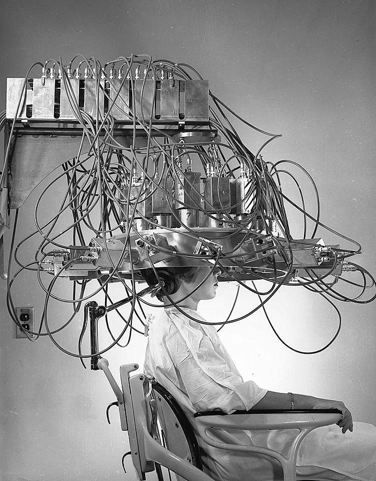
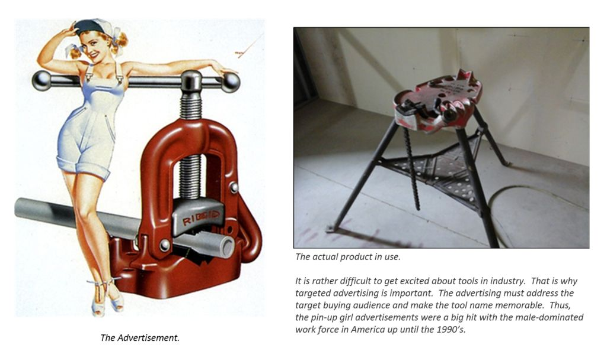
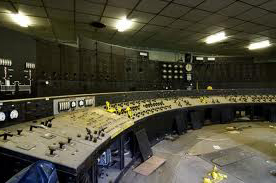
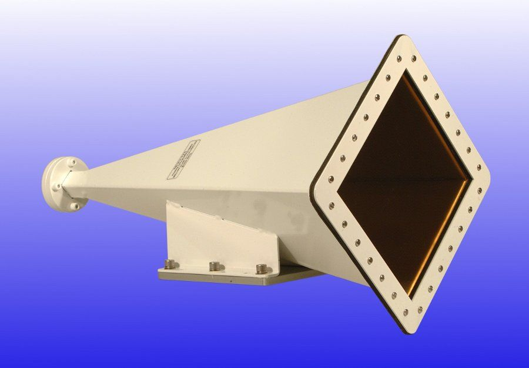
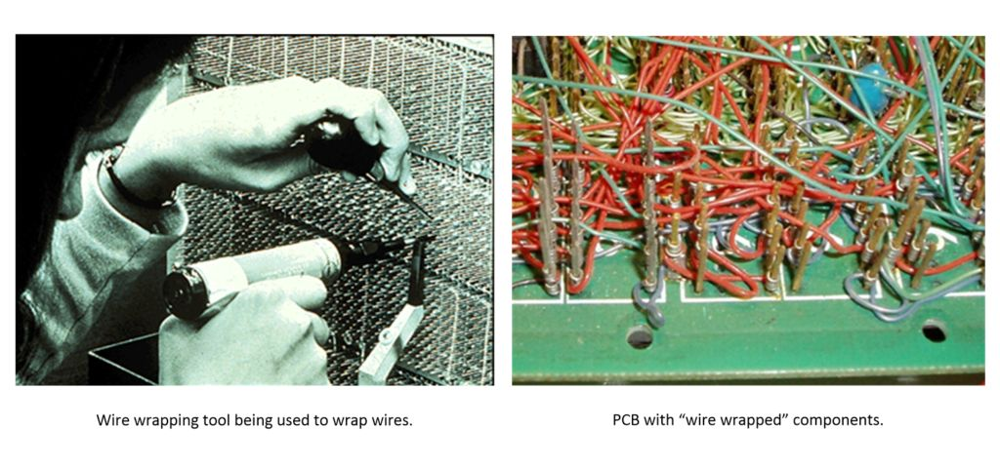
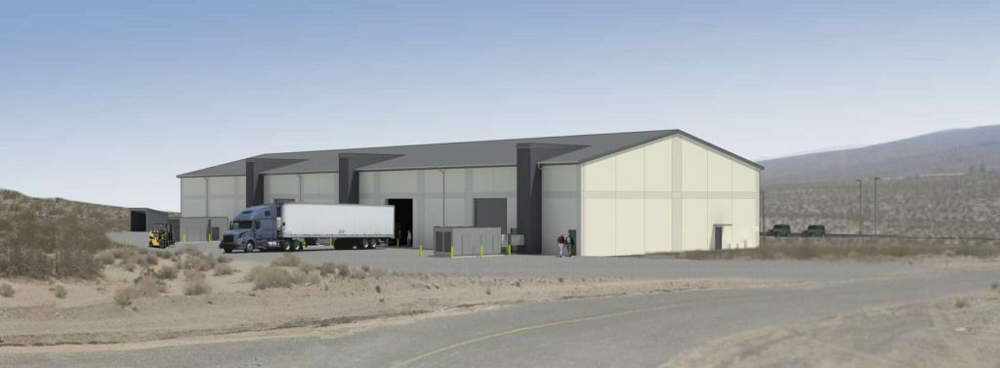
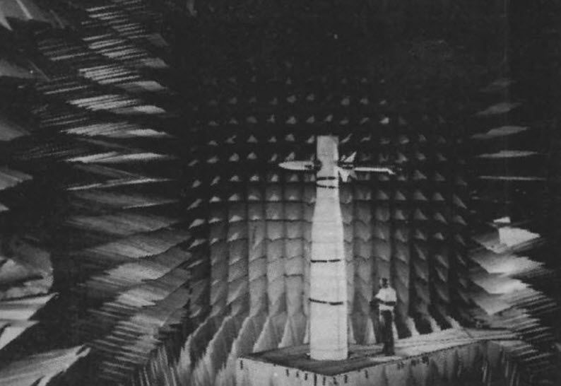

Let’s discuss my training. This wasn’t the kind of training that you would give to a new class of aviators every few months. This wasn’t the kind of training that involved textbooks, and a class instructor. It was something else entirely. It was alien to anything that I have ever experienced previously. Here, we discuss what I did at China Lake NWC, and how I underwent training for my particular role. This training was unique and different; the location itself was unique and different as well. The entire base was situated up high on top of a raised plateau high up in the mountains. Perhaps one might go as far as to consider the place to be equivalent to the Chinese Tibet.
Living in the “High Desert” was a wonderful experience, but not as great and unique as what transpired during my training. It was during the training that I became more than what I ever thought I was, or ever could be. This training and events appear impossible to comprehend, but they did happen; over four decades ago…
Navigation
This is Part #1 of a two-part blog post. To read Part #2, please go HERE.
Background
This post discusses a period of specialized training that I underwent in support of my role within MAJestic. It concerns “calibration” and “adjustment” exercises for a number of probes and devices that were implanted inside my brain. These devices consisted of three “sets”. One set, was extraterrestrial in nature and performance. The remaining two were terrestrially derived MAJestic implants.
All of the “training” and calibration exercises could ONLY be conducted within a specialized chamber, while all three probe “kits” were engaged.
Training Overview
The training mostly consisted of sitting in a chair inside a huge anechoic chamber.

An anechoic chamber (an-echoic meaning non-reflective, non-echoing or echo-free) is a room or chamber that is designed to completely absorb reflections of either sound or electromagnetic waves. They are also insulated from exterior sources of noise. The combination of both aspects means they simulate a quiet open-space of (apparent) “infinite dimension”, which is useful when exterior influences would otherwise give false results. These chambers are quite usefu for testing any item that is sensitive to electromagnetic radiation.
In fact, there wasn’t any formalized classroom training at all. There were no teachers, or teaching aides. There were no textbooks, notebooks, or classes. I only had but one “class mate” which was Sebastian (not his actual name). This kind of training was unlike any kind of training that I have ever had.
Training Center
The anechoic chamber was located deep within the China Lake Naval Weapon Center complex. It was located inside the complex within its own compartmentalized region. Of course, this base within a base had its own guard and fences as well. To reach it you had to go through the various checkpoints and guard stations. You would show the guard your badge and then the guard would log in your identify and cross reference it against a list of approved people who were on the access list for the day. As you enter into the more restricted and secret areas of the base, the access list becomes more and more exclusive. Thus allowing for more scrutiny on who goes in and out of the facility.
Once inside the restricted are, you had to enter yet another high security area. This was the region inside the security zone that was compartmentalized within the research base. Like all the other guard posts, your identify and your badge is checked against a clearance list to verify that you are who you are represented to be. Since this is a US Navy base, all the guards are marines. Wearing desert camo uniforms and carrying holstered 9mm side arms and combat rifles. (The M9 has been the standard sidearm of the United States Navy, United States Army and the United States Air Force since 1985, replacing the Colt M1911A1 in the Army and Navy and the Smith & Wesson .38 Special in the Air Force. The M9A1 is also seeing limited issue to the United States Marine Corps.)
They were typically young and in their 20’s. They always carried loaded weapons and side arms. They were always friendly and professional, but I have no doubt that they wouldn’t hesitate to shoot me dead if I were not who I was supposed to be.
They would always check the contents of the car we were driving in, or the bag that I had with me. In those days, I often rode to the complex on a motorcycle. It was great riding my motorcycle out in the desert. As long as it wasn’t too hot, I would ride to “the Pinnicles” (a curious rock formation) off base, or ride the twisty road to Trona and pass by the “painted dinosaur rocks”. They would thus, check my backpack to see if I was bringing in or out any forbidden or suspicious items.
More than one (contractor) left behind briefcase or bag was detonated “sight unseen” for the purposes of safety. (In those days, we typically carried a rectangular briefcase of the traditional 1960’s style. A handful of people carried a backpack, but they were rare at that time.) Mostly, I just carried a homemade lunch with me in my briefcase. I typically strapped it to the back of the motorcycle using bungee cords. I never had any problems with the guards.
Usually I ate baloney, cheese and tomato on plain white bread with mayonnaise or yellow mustard. Usually I ate it with Lettuce, (yellow) onion, and (sweet) mayonnaise (Miracle Whip), but the heat of the desert tended to warm the sandwich and spoil it. So, I oftentimes I simply ended up eating hot peanut butter and jelly sandwiches instead. For the interests of total disclosure, I also tended to eat leftover spaghetti in a sandwich with peanutbutter and tomato. My friends and coworkers thought I was nuts, but it was good and I liked it. Perhaps I was a bit unconventional, but you could chalk that up to personal eccentricity. As an aside, I love tomatoes. In fact, one of my “little pleasures” has been to grow tomatoes at home. Not the hard, tasteless tomatoes genetically modified to be transported to supermarkets, but rather the soft, huge and sweet tomatoes. These went by names of “Big Boy”, and “Better boy” tomatoes and grew to huge size. Nothing tastes finer than a fresh homegrown heirloom tomato on fresh Italian bread with mayonnaise. One of my pleasures, indeed.
When I rode up to the gate, they would want to see my badge. They would then look at it, and then compare it to the clipboard. Then note when I arrived or left in the log. Then they would wave me forward and beyond. I would say that it never really took more than a minute or two for them to process me. The particular zone or region that I was part of was not a very heavily traveled location. There might be a handful of people with access to that area. Perhaps a total of twenty or so. So they would look on the clipboard, and see that I was who I was and let me go.
The waiting was usually due to all the other people in the various cars and trucks before me. The base was very large and sprawling and as such, there were many, many people that would go in and out of it. It was the duty of the marines to make sure that access was restricted to only those who had legitimate business on the base.
On entering or leaving the base there was generally a small line of cars and trucks that had to be “processed”. This meant a check of the ID badge, and confirmation of our purpose on the base. They also would check our bags, the trunk of a car or the back of a truck. It didn’t take too long. At most, I would say perhaps fifteen minutes would pass while I sat there on my black motorcycle sweltering in the hot desert sun.
The facility that I was trained at was an anechoic chamber located within a special ELF test range. (A test range is a special name that simply refers to an area where tests are constructed. They may or may not have distances “ranged out” for calibration exercises. For instance, like a “rifle range”.) It was NOT a dedicated teaching facility. It was an engineering test facility that was used to test experiments.
During my stay at the facility, it was repurposed for ELF calibration and training for specific MAJestic members (in this particular program) so equipped with Core Kit #2 probes. Our roles were truly unique as no other members required this kind of “training”.
Like many high tech facilities, this was located in a remote part of the base. (The base was divided into ranges, or test centers, often separated from each other by miles of open desert.) It consisted of a simple little cluster of buildings in the middle of an immense stretch of flat desert. To an outside observer you might not have any clue as to what it was. On the outside, it looked like any cluster of buildings in the desert. Moreover, like the desert in the Mojave, all the buildings were surrounded with boxes, crates, strange equipment, debris and a mix of old and new things that never rusted or corroded in the hot desert heat. Everything looked new, though they tended to be faded and dusty.
To get to the complex you drove on this flat road that went far off into the distance in the wide and desolate desert. This road, aside from a couple of turns around some more or less low hills, was straight. Once you reached to the top of a local crest, after the last security gate, you could see the road stretch off into the distance like a straight arrow. Off in the distance it would continue towards another group of low hills. On both sides of the road were the low shrubs, sage brush and rocks, stone and sand so characteristic of the local region. Eventually, there in the middle of the desert sat a cluster of buildings, stationary vans, and portable offices. From the crest it looked like a small remote pin point of objects. As such, it would take a good fifteen minutes to drive to it. The buildings and gear all clustered around a big warehouse prefab building that housed the chamber, and the two electronic labs that occupied the space.
As you rode down the hot asphalt road (on the way to the test facility) you would see the cluster to your right. It sat off a moderate sized parking lot. With perhaps, three to five cars parked there typically. Often times, I was nearly alone at the facility. If I had no scheduled training, and no one was there, I would often sit there inside, reading a manual or killing time waiting for others to arrive.
High Technology in the Desert
Hollywood likes to present a stereotypical image of secret, high technology programs. They envision heavily armed guards, men and women with black sunglasses, ear phones, and lots and lots of gates, fences, and glass. Glass everywhere… it seems. Nice and shiny chrome or brushed metal electronics. Hollywood makes you think that this is what high technology and research are. They give you the impression that there are attractive scientists and specialists who operate this equipment.
Maybe there is a quirky or colorful person who is brilliant, but a little eccentric there. They portray an area that is all high technology with all kinds of cool and mysterious scientific apparatus, with plasma and LCD displays, with brilliant white sterile hallways, and device filled dark rooms and all kinds of cool people wearing trendy clothes and white lab coats. Always very attractive, with usually a “hot” blonde girl who was brilliant but unobtainable (from a dating point of view).
The geniuses tend to be in the early 20’s typically just out of college, and anyone who is older is portrayed as really old with white hair, balding and “out of touch” with the rest of the scientific community. Such is stereotypical Hollywood. They give you the impression that it had all kinds of electric eye and key-activated pass-codes and things like that…
But, I tell you the truth, Hollywood hasn’t a clue! The reality was really, really different. Well, at least in the 1980’s it was.
In the world of Hollywood, the stereotypical scientist and engineer wears a white lab coat, a magnetic card reader badge, and tends to be a bit eccentric. They are the geniuses of the sterile metallic and glass monoliths that they inhabit. They are portrayed as geniuses who are completely out of touch with the world outside their sterile domain.
Well, for one thing, the hallways were plain. They were government hallways for goodness sakes! For those of you who have never been inside a government building in the 1980’s, it was a speckled white linoleum tile floor with two tone, (lower) light pastel green walls / (upper section) off-white, walls and fluorescent lights on the ceilings. The doors were all heavy gauge steel with a stainless steel kick plate and robust knobs.
All the offices used office furniture that was maybe ten to twenty years old, and possibly even older (for the mid-1980’s, placing their manufacture in the 1930’s through the 1960’s). I saw some wooden desks from the 1920’s there, but for most of the base, it consisted of heavy-steel grey desks that were mass produced in the 1940s through to the 1970s. The new equipment were mostly the electronics that we used, (1980’s style push-button) telephones, and (huge black & white non-color print ability) copy machines. Faxes were just becoming popular, but still not prevalent. The use of computers were for specialized projects and for the engineers and techs, not for the secretaries. No word processors were used. This was a time that was way before Microsoft Word and Microsoft Office came into popular use. We used electric typewriters. The labs used state of the art equipment and machinery. However, that tended to be off-the-shelf high-end HP diagnostic and design equipment.
The base was populated with spread-out frame buildings that sat in the hot desert heat. Many were plain and nondescript. You couldn’t tell their purpose from the outside. Some possessed signs, while others just sat there mutely.
The people were government employees.
Brilliant scientists and engineers, but they all dressed conservatively. Typical dress was casual with a white or polo shirt over blue jeans. In fact, they dressed in the western style. Some wore cowboy hats, most wore cowboy boots and jeans. Lee’s, Levi’s and wrangler jeans were the most popular at the time. Plaid shirts and collared T-shirts were the norm. Many wore polyester shirts and pants (this was the 1980’s after all). The wearing of ties was quite rare, though Texas style bolo ties would periodically make their appearance. (At this time, not too many people wore collared polo-shirts. We all tended to wear white or white patterned cotton/polyester blended shirts.) There were very few people in uniform, as most people were civilian employees or contractors working for the government. Many, if not all, had prior active military service.
Most of the people there at the local satellite facility were men. I don’t recall ever seeing a woman there. There were no janitor staff or maintenance staff there, unless on special assignment. Thus the place ended up getting a dusty and cluttered look. As projects came and went, the debris of prior projects would accumulate one on top of the other for months, years, and even decades. In the lab would be industry calendars that would be a year or two out of date. They don’t make these calendars anymore, because they are deemed sexist and inappropriate. But we all loved them. They would often portray an attractive woman, often in a swimsuit, holding some kind of industrial supply or tool. For instance a typical calendar might show a red haired busty girl holding a wrench and leaning against a compressor.

In the post-President Bill Clinton (D) world, anything deemed to be sexist or demeaning was removed from the American work place by presidential decree. I think that this was a political move initiated by his wife; Hillary Clinton. It was an effort to gain political support by a major feminist voting block that was of significant importance to his Democrat political party. As such, he introduced, what later on become known as, “feel-good” legislation. I personally think that this was and still is a suppression of “free speech”, but his supporters didn’t. In their eyes is was one of a continuing series of small steps and efforts to build a “more perfect world” in which everything that is objectionable to his electoral block of supporters is suppressed and made illegal. These were rules, or guides, or even laws that mandated the removal of all items that were deemed sexist or demeaning to women in the workforce. Today, you can never see these objects in an American workplace, while they are however still common in other nations. As an aside, I was once lambasted for having a “Weekly World News” calendar on my desk. Each day would be a new article from that amazingly funny newspaper. Each day was an outrageous front page article from this newspaper. One day, HR called me to their office at the end of the day. They complained about my calendar. Apparently in it was a picture of an article that it had describing a girl who gave birth to a 54 pound baby (I forgot the actual weight). I thought that it was funny, but HR did not at all. I was firmly told that the calendar was demeaning to women and that I had to remove it and write a formal apology to go into my permanent record or suffer suspension and loss of my job.
The ELF Substation
The test substation was nothing more than an island of buildings on a hot flat desert plain. There were no trees. Mostly what you would see would be low brittle shrubs and sagebrush. The ground was always covered in a fine sand of coarse rocks, brittle twigs and debris. (This always included these multi-pointy star shaped seeds and burrs that seemed to always grab hold of my trousers and socks no matter how hard I tried to avoid them.)
The desert itself was mostly flat with various groupings of boulders placed haphazardly throughout the terrain. Always, it seemed, that the boulders were grey and the sand was golden. All of this was often framed against a pristine, robin egg blue, sky. In the distance you could see the faded light Blue Mountains (typically a hazy blue tint) obscured by the daytime heat. The Panamint Mountain Range were always viewable from the base no matter where you stood. They seemed to always be covered with snow at their peaks, even in the hot, hot summer sun.
The cluster consisted of one large blue prefabricated building that was perhaps two stories tall, surrounded by a number of smaller trailers, sheds and structures of unknown purpose and function. Many of the cement structures in the surrounding land were former test stands, or facilities that were part of previous research and test projects. Many which were cancelled or killed over the years. The projects, abandoned after being recorded and archived. Their equipment cannibalized for other purposes and projects.
Many people do not realize that in the R&D field, more than 80% of the projects that scientists work on are routinely killed or discarded. The reasons vary. Some [1] are simply due to funding cuts, which is a political matter. Other reasons include a [2] change in research direction, a [3] key individual leaving the program or a [4] decision made elsewhere to focus on something else. The Mohave desert is full of the broken dreams of many an aspiring engineer and scientist.
No matter where you were on the base at NAS NASC China Lake, you could see the mountains in the distance. This is what they looked like. In the distance they appeared with a bluish tint. It is an atmospheric phenomena that I cannot explain adequately to the reader. The reader must realize that for the most of the time, it was hot and dry desert, and the view reflected that fact. What was most interesting however was that the valleys as shown in the picture above all had a small stream in the middle of them, and if you followed the valley up higher to towards the top of the mountain the streams got wider and life began to manifest itself in the form of small trees, weeds and grasses.
All the sheds, buildings and trailers were surrounded with all kinds of unused electronics, scientific apparatus and military devices of god-only knows what they were for. (There would often reside many delightful objects of curious contraption inside of numerous cardboard boxes, many of which were never even opened once.) The reader has to understand that it rarely rained, so a person could set the stuff outside for storage and nothing would ever happen to it. So there were piles and piles of boxes of computer and electronic components, wires, containers of all sizes and shapes and gizmos and gadgets of an electronic pedigree of some sorts lying about. To get to the complex (as well as leave it), you had to go through 3 gates with armed guards. So, no one was ever going to steal the stuff…
The electronics varied from scavenged avionics to entire mainframe computers. There were boxes of disassembled antennas, submarine sonar systems, and missile tracking radar. The boxes would hold such things as reams of wire in different gauges to boxes of nuts and bolts. In a way, it was like a cross between Home Depot, a yard sale, and a Military surplus store all located in an old trailer park.
Every time that there was a project, the engineers on the project would store their gear outside. That was usually because there wasn’t enough space inside the offices. Outside were cardboard boxes, some open, and some closed. There were boxes that had never been opened, but had been sitting there for years. Often these boxes were loaded with all kinds of electronics gear. Some boxes would have PCB panels, while others would contain wires. Still others would hold parts of antennas. There were boxes of screws, resistors, and all manner of junk that made the place look like the cross between a hardware shop and a flea market.
As odd as this might seem, generally no one would scavenge for parts unless they obtained permission from the original owners of the components first. This was a small community on the base, and everyone knew everyone else. At least, as far as the grizzly old timers, and managers were concerned. Transient engineers, other contractors, and those individuals like myself were excluded from the good-old-boy network that persisted at the base.
But, while I did not know it at the time, my role in MAJestic was a very unique and important one. I am sure that were there any need to defend me or support me in my role that the entire weight of the MAJestic organization would bear down on anyone who would interfere in my training and purposes there.
The portable office buildings were simply work offices. There were file cabinets, air conditioners, and some even had a sink and fridge. Inside were desks, conference tables and just the normal brick-a-brack associated with any kind of business or work. Mugs with Naval and Weapon Systems logos on them abounded. I well remember one that I used (don’t remember where I picked it up, probably next to the coffee pot – an orphan mug) a CBU-78/B with a picture of some weapons system and some flashy logo design was quite common. We used the port-a-potties that were on the edge of the parking lot for the most part. Though, at least one of the trailers had a fairly decent restroom. All of the buildings were cooled by both Air Conditioners and Evaporative coolers. The most common method of cooling was the evaporative cooler, which we all liked to call a “swamp cooler”.
There were about four large office buildings there and one smaller one. These were usually occupied by other people who I did not know, doing work that I knew nothing about. When I would stick my head in the office to use the head, we’d nod and say hi, but that was about it. One the side of each of the office buildings and the main prefab buildings were numerical designators, or address that things could be delivered to them. There was a mail box in front of the parking lot, and a large dumpster on the edge of the parking lot. There was nothing extraordinary concerning the layout of the complex. It was a typical industrial layout that could be seen anywhere in the United States or in the world.
Off the road in front of this complex was a small parking lot big enough for about thirty cars, though it was mostly empty with no more than five to eight cars there at any given time. It the far end was an area for motorcycles. On the deck were metal plates for the rider to use to put the kickstand upon.
Off from the parking lot was a set of cement steps that led to the main building. Next to the side door was a coke machine. Though, I never saw anyone ever fill it up. I suppose that you would have to have a high security clearance to fill soda machines in this area.
The Test Chamber
The main building, as far as I was concerned, was the big blue prefab warehouse building. It housed the anechoic chamber that I did most of my training in. It was a dual use facility and was used to test and calibrate various munitions at the base. Inside was a really messy control booth, raised up about 10 inches above the floor with cabling below it. The control booth contained a long curved, “L” shaped console desk. In the desk were various knobs, dials and electronic modules. There were also voids and gaping holes in the metal of the desk were modules were removed and not replaced. In these holes, sometimes wires would protrude and they would dangle out of the hole like some kind of colorful dusty snake. Surrounding the desk were rack mounted electronics that controlled the “horns” that would be beamed at us when we were in the chamber.

Photo is of an abandoned power plant control station. Never the less, the control room to the ELF station looked remarkably similar to this (cluttered, but not so littered. There wasn’t any trash on the floor, etc.). The dim lighting, the greenish-grey colors and the dusty panels were identical to the control station. Off the side were large equipment racks with files of wires that cascaded downwards, and many panels were removed or open so that the workers could access the controls at will to modify, repair or access the equipment inside. It was a wonderous cluttered dim dusty mess.
There were a large number of horns. They ranged in size to big units the size of a small car, to tiny hand held units that could fit into your hand. Each one was labeled and identified and rolled for storage in every nook and cranny of the building. The smaller horns sat on dusty shelves, while the bigger horns were wheeled into the dark hallways surrounding the chamber.
Typically, most horns were unpacked and stored as is. Sometimes they were covered with a tarp of a sheet of plastic, and other times, they just sat there collecting dust. Like everything on the base, there were various tags, labels, and documents that provided code numbers used to track the devices and their ownership.

A “horn” is a kind of electronic speaker, looking a lot like an old fashioned horn, which radiates different radio frequencies. There are small ones (like tweeters) and large ones (like Bass speakers). But these horns dealt with Extra-Low frequency signals, so they tended to be a different shapes and sizes than you would see in home speakers. For us, and for the military devices being tested, different horns were used. But for us, they were much smaller than the horns used to test missiles and weaponry. (This was a dual use facility, with all kinds of Ordnance lying around).
The horns were controlled by a collection of custom electronics and modified off-the-shelf gadgets on the base. The control room looked like the basement of a mad scientist, with all kinds of junk everywhere. With wires of all kinds snaking about. It was a wiring nightmare, as most of the electronics were custom made on the spot, apparently in the labs nearby. They were all wire wrapped, instead of soldered, and if one came loose, the training had to halt until we repaired it again.
“Wire-wrapping” is a technique that is used to electrically connect electronic components together. Today, most electronics on a given PCB are placed there by “pick and place” automated machines, they then go through a system that melts the solder in the very tiny joints on the electrical board. But there are other methods. One very famous method is to use “wave solder”. This technique connected “wire leaded” electrical components by washing their lower portion into a small stream of liquid lead solder. The wire wrap technique does not use molten solder, instead it relies on the wrapping of a very small wire over the length of a long pin.
Directly adjacent to the chamber was the control station, and next to that was a large electronics lab where parts would be assembled and manufactured. We usually had the entire facility to ourselves. People would come and go while they worked on various projects. Only once was there a spot check whether I belonged there. And that event passed uneventfully.
The control station consisted of a raised plywood deck approximately one foot high off the floor. Under it snaked all kinds of wires, plugs, and cables that serviced the equipment that was used to run the chamber and operate the horns. On the platform were metal consoles that looked identical to that which were used in the SLICK-6 control booths to launch the space shuttle. These desks had wires, chairs and were often cluttered with dusty papers, tools (typically to include a screwdriver and a flashlight), and unused coffee mugs with the logos of various military programs on them. Next to the stations were electronics racks that held a large number of custom made electronics and other elements of modified electronics as well.
In the adjacent electronics lab were the standard workstations. These included work tables, a rack of spools of multicolored wire, cabinets of electronic components, and cabinets of specialized components. There were the standard array of oscilloscopes, power supplies, tool boxes, lams and a litany of miscellaneous debris. These were objects consisting mostly of papers, pencils, half completed projects, and Bric-à-brac of an indescribable nature.

Of course, we all helped get the equipment to work, and my background and training was put to good use on the equipment.
The ELF chamber was huge and dark. It could have fit a small bus easily inside. There was a single incandescent light high up in the ceiling, and a plywood walkway that stood over the triangular cones that lined the floor. The cones themselves were dark grey and covered with a rough finish to absorb all sounds. It was spooky-quiet in the chamber. The door to the chamber was thick and it was easily ten inches thick and studded with cones on the inside. On the outside of the door was an indicator light. This red light would be lit whenever a test sequence was going on. It was a standard 60 watt incandescent bulb with a red (instead of clear) bulb surface. That would warn people to stay away and not go inside. Going inside the chamber would be hazardous if the wrong horn was powered on.
Inside the chamber was empty, but it had an area that permitted large ordinance (it was often used to test the radar and emissions properties of missiles and rockets) to be wheeled in and tested. In my case, an ejection seat was wheeled in and placed in the center of the chamber. It was mounted on to a welded frame and could be wheeled about as needed. This seat was pulled out of a dark corner, dusted off, set in place and secured to the floor. The idea was for it to be located exactly in the proper place in the chamber. The seat itself, was an ordinary enough object, no doubt scrounged from a previous project or obsolete program.
Waking up
Up until the middle of (that) summer, I still had no recollection of my true and real purpose. I had “forgotten” everything. I had no memories of what transpired while I was in AOCS.
All my memories were lost, occluded and hidden from me. I could not access them at all in any way. As far as I was aware, my time in the United States Navy was a brief experience. It was a mistake. In my mind, according to my memories and feelings, I had experienced a small taste of what it was like to fly and I did not like it. I had absolutely no desire to fly, go into space, be a fighter pilot, or any kind of pilot for that matter. The memories that I had were artificial…
There were real reasons for this. It was important for various reasons that I not have access to these memories. Most of the reasoning behind it was hidden from me. Though, over the years I have speculated on the various reasons, and thus I have come to the obvious conclusion that those whom made the reasons had access to information and knowledge that I was not privy to. I obviously needed to be oblivious to my purpose, and to the reasons why I needed to be trained. I needed to blend in to the world around me, and I needed to be average and typical. I was not to “stand out” in any way. No attention was to be directed towards me.

Experts will tell you that memories reside within certain parts of the brain. They know this, they explain, because they have mapped how the brain reacts when certain memories are triggered. However, they make one critical ASSUMPTION. They assume that ALL of the activity associated with memories occur ONLY within the brain. As such, under this assumption, they can map the way the brain behaves when thoughts are triggered. However, the truth is that this assumption is wrong. Memories do not reside within the brain. They reside elsewhere, and the brain accesses them using certain techniques. It is the access of the non-resident memories that scientists have mapped. Not the repository of the memories themselves.
While I have just (now) stated that I had no recollection of my memories, it was not precisely true. In fact it was not entirely true at all. I did, indeed, remember every single one of my memories. It is just that I never thought about them.
This is very confusing for many people to understand. It has to do with how the mind accesses the memories. It has to do with the process involved in memory recall. It has to do with the way that memories reside in the quantum cloud surrounding the body. In short, I never forgot my memories, but access to them was denied.
So for me, I had no conscious remembrances of anything associated with the program. Conscious states or mental events lack the spatio-temporal properties of material objects. Therefore, it becomes difficult to physically identify what had transpired during key events.Yet I still retained the memories associated with those events.
My Assignment
To be authorized to be on a military base, and especially where I was to be trained, I needed to have a secret clearance. No one ever went to the regions where my training took place without one. Yet, secret clearances are not just given away to anyone who asks for it. It is extremely selective. The system is designed that way.
Specifically, it requires a purpose and functional role that has to be associated with a given activity. Each activity that the worker is assigned had to be placed under a specific project. Each project had a level of secrecy associated with it.
However, to everyone else, I was “just” an engineering contractor. (The reader must realize that there are many kinds of contractors. Some have extremely restrictive security clearances. There is no such thing as a “standard” engineering contractor.) I could not, for instance, say that I was a member of a secret program, and needed a clearance. I could not say that I was required to have a special clearance because I was part of a SAP. These programs are secret. No one knows about them; even the people on the bases that also held similar clearances.
There is no “James Bond style” secretary to the head boss “M” that knows all the agents, and all their assignment (Miss Moneypenny.). That is just Hollywood fiction. Again, to remind the reader, real and actual secret programs are secret.
Therefore, I needed to [1] be assigned a “visible” and tangible project that [2] required that I do work on the base facilities. [3] I had to have access to the inner (more secure) regions of the base. [4] I also had to be given the secret clearance necessary to do the work. Finally, [5] the process of obtaining my secret or confidential clearance must not betray my actual role.
Thus, I could not simply claim that I was a “top secret W(U)-SAP agent” that needed additional training because I had an association with MAJestic. (The reader must recall that I myself had no recollection of the memories of that role. So for me, I was, for the first time, applying for a secret security clearance. Not remembering that I already had the highest levels of military clearance through MAJestic.) I had to apply through local military and civilian government channels to get the basic military clearances.
That is how it is done.
When a person in MAJestic; with the highest clearances available needed to work on a military facility, or government base, they would reapply as a civilian for “lesser” clearances. No one would ever know their true status. So to get a person, who was part of the MAJestic team onto a base you find a reason to hire that civilian. Then apply for the necessary paperwork and clearances. Thus the solution was simple, and quite common, then as it is today.
In practice, you simply hire the individual to work on the base as a “military contractor”. This is also known as a “carve out”. It moves government control away from a government program. (You “carve it out” of the highly scrutinized and politicized, government budget.) That way it cannot be politicalized. It cannot be “used” as a “bargaining chip” to pass one sort of legislation or the other. It cannot be used as some type of “political football” to further the needs for the political elite. It is protected, insulated and isolated from all of that.
Most military contractors had a technical background of some sort. All of the members of MAJestic had a technical engineering background. In fact, this was one of the selection criteria. It is pretty smart when you think about. You cannot join MAJestic unless you possessed a technical background.
There is no way that you can get it without having to PROVE that you have a technical ability. It effectively screens out “community organizers”, “political appointees”, and “liberal activists”.
As, then as now, people who tend to be workers, who tend to apply themselves to a project, often also tend to be traditional or conservative regarding many issues. Then, once hired, the contractor obtained the security clearance specific to the work that needed to be conducted.
My initial work at the facility was as an electrical technician to help support the staff at the facility. This was the lowest level of involvement that I could obtain to access the base.
It had, associated with it, the smallest number of questions regarding what I was to be involved in and what my tasks were to be. Everyone who works on a military facility needed to obtain clearance to do so. The smaller the number of questions asked, the better (for us), as our background was such that no “red flags” would be permitted to be visible. Our training had to be conducted surreptitiously. For other positions, and other clearances, more questions and more detailed examinations would have to be conducted.
This might be confusing to the reader, but it is very simple. As a degreed engineer, I should have been hired at a much higher rate. That would be a GS-9, or even a GS-12 (to start). However, with every increase in pay grade comes an associative list of (more extensive) questions and inquiries. All of which require detailed subsequent background stories (and investigations).
Additionally, it is best that once I obtained my “training” that I remove my history from China Lake as quickly as possible. Over time, it just becomes a simple footnote in a CV. That would not be so easy if I held a more substantive position on a military base.
The reader must remember that this was in the 1980’s under President Ronald Reagan. Security was taken seriously, and only the most worthy obtained clearances. (Ah, and still, mistakes were made.) Fast forward to the President Obama (D) administration fiasco where it seemed like anyone could get a high paying job, and get a security clearance. They were being handed out like candy at a parade. All you need to do is fit the approved criteria. This criteria was quite simple. It was never written down officially. For if it was, it would constitute treason. However, in general it seemed like all you needed was to [1] be Muslim, [2] be a member of an approved minority, [3] commit no more than 200 crimes, and [4] show allegiance to a globalist agenda. (Sorry for the vitriol.) Yet, there is truth in these words. The security systems in place at the time of this writing are mere pale shadows of what was in place during the 1980’s. At that time, people had to prove that they deserved to know something. The term “need to know” was taken seriously and implemented seriously. It is almost like “need to know” was replaced with “must be diverse”. (Ah, what the fuck do I know? He had an agenda and he followed through with it skillfully, and the sheep followed his sanguine song. I just see the mess that he left, and shake my head, because I actually know what it means in the BIG PICTURE. Sigh.) But, you know what? It’s No Longer My Business.
So, I was hired as a GS-5 pay grade military contractor.
To make up the difference in pay level, my company provided me a generous Per Diem allowance that (when) combined provided me with an adequate salary during my training period. So, in truth, I was being paid as the engineer I was, but for my technical clearance and all other issues regarding the government, I was just a lowly tech. I rated somewhere above janitor, but below engineer.
Like all base contractors, I had to perform my stated labors, and I did so without complaint. Thus, I helped [1] debug the equipment, and [2] repair it when necessary. I [3] helped to calibrate the units, and [4] run drills and [5] tests as needed. Indeed, I spent much of my time in the [6] control booth and in the [7] nearby electronics lab. I [8] learned how each and every one of the test units worked, and [9] I was able to debug it electronically.
Most of the controls used wire wrapped components. This was a wiring nightmare. It looked like thin spaghetti in a maze of colors and shapes. Often these wires would come loose, or would be accidently pulled out of place, and we would have to go and repair the damage. Sometimes the parts and components would fail, and we would have to repair and replace them. Sometimes we would have to make our own replacement boards and units. This was typical of the work myself were involved in while awaiting our training sequence.
The work was easy. (We were just way overqualified for the work. It was of a technical nature, and there was no question that we could do it.) It was just tedious.
In addition I helped to [10] test the units, and [11] perform manual labor associated with testing the equipment at the lab. It often involved the moving of equipment, recording the test results and conducting setup and tear-downs of various testing configurations. From time to time, I would also be called upon to do other related engineering tasks; such as [12] drafting checking, [13] basic drafting, and CAD design (on early CAD systems; notably CADKEY).

Total Memory Recall
Every day was spent helping the staff at the facility test ordinance in the ELF chamber. That continued for months up until one day when I was asked to help install a chair inside the chamber. It was just sitting off to the side behind one of the partitions, and rested on a wheeled plywood platform. It was just a chair or a seat. There was nothing special about it. I suppose a “folding chair” would have the same utility.
After we had installed the seat, I noticed that the rest of the staff at our little island cluster of buildings had left for off-site meetings, thus leaving us three alone. (That, in itself wasn’t really unusual. People came and went. But on that day, and the subsequent days, the local ELF facility parking lot was absolutely empty.) It was just myself, Sebastian and the Engineer who ran the facility remaining. We chatted a while, and after we finished our cokes, I was told to sit there patiently and not to get up for any reason. Sebastian helped close the door and I was left alone in the chamber waiting quietly.
The door to the chamber was then closed and sealed and the indicator light (This was a 40 watt red-colored incandescent light bulb that was in a light fixture outside the chamber, residing above the door to the ELF chamber.) was turned on. The indicator light was always used in the event of a test, but I had never been inside the chamber during a test. It was eerie and quiet. Inside the chamber is enormously quiet. (The interior structure of the ELF chamber was designed to absorb sound, radiation and light. It is the nature and purpose of the chamber.) Anyone who has ever worked with these kinds of chambers will be able to confirm that fact. It was dark with one lone 60 watt incandescent light bulb dangling from high up near the ceiling. It was cool however, the chamber was at the same temperature as the rest of the air-conditioned building. Even though there were no vents inside the chamber, I felt comfortable sitting there. Though, in hindsight, maybe I should have brought a book with me.
It began with silence, and peace. Then I began to feel an irritation. It began to feel like all kinds of little tiny insects were crawling in my body. Of course, it only felt that way. There were no actual tiny insects. It felt like every one of my nerves were alive and vibrating, and that gave me the impression that there were little things crawling inside of me.
And, before I knew what was going on, I heard a strong ringing in my head and there was a sequence of flashes and I lost control of my eyesight. Instead, the long-ago yet familiar pastel map from the NAS NASC Pensacola Florida ELF facility at NAMI flooded my vision. And at that very moment, at that exact instant of time, I had a total and complete resurgence of all my repressed memories associated with the W(U)-SAP (MAJestic) program.

The reader needs to understand that the consciousness is NOT the same thing as the soul. Likewise, memories are not the brain, nor do they reside inside the brain. They are something separate that is accessed by the brain. As such, the brain and the consciousness that controls it, the soul and memories are all separate entities with different purposes and behaviors.
The core kit #1 probes were engaged.
It lasted for one or two minutes and then the field was turned off and my eyesight returned. I sat in the chair and did not move. I now remembered everything. I had a complete and total memory recall of all the events leading up to the meeting with the Commander at the base, and everything subsequent to that. It was stunning. But even more stunning was fitting the fragmented pieces together and merging my “apparent” life that I have been living with the “true and actual” reality that had been hidden from me. To me, it was enormously stunning. I just sat there and did and said nothing. I was overwhelmed.
The reader must recognize just how much a shock this was for me. The reader needs to remember that I had absolutely NO recall of my meeting with the Base Commander, or meeting Sebastian. While I recognized Sebastian when I met him, I did not KNOW him. However, upon the reemergence of my memories, it all came back. I remembered everything. Remember, a number of years had elapsed since when I joined the program and “officially” left the US Navy. During that time, I lived a disillusioned life; a life where I (and my family) believed that I had failed AOCS and that I did not have what it took to be a Naval Aviator. That belief certainly colored and affected my subsequent decisions. The knowledge that I was selected for the MAJestic program out of the Aviation Officer talent pool was hidden from me, and now as the information and memories returned, it was truly an earth-rolling shock to my emotions and mental state.
Eyesight under the field effects
Sitting in the NAS China Lake ELF chamber was unique and different than anything that I had experienced at NAMI in NAS NASC Pensacola, Florida.
For me, under the influence of the field, everything appeared different. While I still retained the ability to see properly, my vision was changed. The most noticeable aspect was that I saw the harmonics and cavitation effects of the ELF waves in my visual cortex. All waves have harmonics and interference patterns. We see that in water when you make waves by splashing. But we, as humans, never see this effect in the air. But, if you have the implants, and are under the effect of the field, you actually do physically see the effects. You can actually see the extremely long waves bounce and hit the physical objects surrounding you. You can see it with your eyes. I do not how this happens, or what the mechanism is, but that is what happens.

The cavitation effects appear as dark lines or crescent troughs and ridges that overlap in the room where you sit. They are obviously affected by the surrounding physical geometry of the room, as their appearance changes as you walk around the room into another area. Always sharp corners, right angle protuberances, and flat surfaces make the wave shape most distinct. Soft and rounded surfaces dilute the cavitation effects. It also is apparently affected by the mass of the physical objects. For instance a cement wall will have a greater influence than would a small wooden chair.
In the darkened anechoic chamber, it was still difficult to see. As there was only one light bulb in the entire chamber. But, I could see the interference patterns reflected in the chamber and affected by the thousands of triangular cones that dotted the walls and ceiling. The most pronounced and obvious patterns were associated with the corners in the room. If I failed to look at the corners, I would have failed to see the cavitation effects in the chamber. (Thirty years later, while I was in my cell, I could easily see the grey cavitation effects. The walls were all white, and it was very easy to see the effects.)
I could see the effects because I was implanted. No one else could see the effects.
Turning ON
It took me a few minutes to compose myself. After all, no matter how one looks at it, it is a shock to your system to know that you haven’t had the ability to access you memories. It most certainly shocked me, and caused me to sit upright in my chair and vocalize “What The Fuck?”. (Yeah, it was just like that.) The team in the control booth (might have) realized this and asked me if I needed a minute to compose myself. They even handed me a can of coke from the window next to the horn mounting clamps. I said thanks and went and got it. They let me drink it in quiet contemplation.
The team at that time (aside from me) consisted of [1] Sebastian, [2] the manager of the ELF “training” program at the facility, and [3] a military contractor who assisted in the setup and break down of the test equipment. This person was quite old (from my perspective at the time) being a retired military and who was working there part time. His experience and knowledge in the field was, to put it simply, vast.
I sat thinking about my life, and resolving the conflicting emotions I had. I was actually a bit miffed that I had to believe that I failed at being a naval aviator, when the truth was that I was asked to do something much more significant. Well, the Commander said that it would be much more significant. But, really, was it? I was an unemployed engineer working as a low grade technician in an isolated research facility in the middle of nowhere. That was, I must tell you, hardly significant in the least. I had endured self-doubt, and discouragement partly because everyone (and I do mean everyone) told me that I had failed, and partly because I too believed that I had indeed failed. We are always influenced by those around us, even when we refuse to acknowledge it. I believed what everyone else said to me. I believed their lies, and adjusted my life accordingly. I endured the criticism of my parents and siblings who reinforced to me the notion that I could not fly or to ever amount to anything significant. I began to believe that all I could be was “just” an engineer. I began to believe that the most I could ever accomplish would be to buy a house and a second hand car. I began to believe that I was a low-achiever. I began to live a life where I accepted the mediocre as the normal, when the true reality was far more important. I was, to put it mildly, quite miffed.
I sat and thought about this for perhaps as long as 40 minutes (Yes; it sucked. But, pragmatically, what are you able to do about it?) and then knocked on the control room window and told them that I was ready to proceed. I think I said something like, “OK, let’s get going.” Or something similar, and took two fingers pointed in the air making a circular movement.
Actually, the basic calibration of the core kit of probes was rather quick and straight forward. It only involved two different sized horns (Perhaps to test and calibrate for each kit of probes installed. I really do not specifically know why two horns were used for two kits of implanted probes. I surmise it is one for each kit, but it is possible that each kit communicated using signals on different frequencies.), and a recording of the readings from the instruments. I sat in the chair rather passively and let them run the calibration tests. I felt nothing at all. I had full access of both my eyes and my memories. Why this testing and calibration was needed, I do not know. The core basic kit of probes was a topic that I never got to explore or investigate.
After a while the ELF field was turned off, and the door was opened and I left the chamber. What is curious is that at the conclusion of the test, my memories were yet again compartmentalized. I left the facility at quitting time with the belief that I conducted just another everyday series of tests. From my point of view, I just sat in the chair and waited a few minutes and then left. I failed to notice that three hours had passed, not only three minutes. I had no memory of anything else. I then drove home and stopped for some KFC take out to bring home. There was nothing spectacular in any way about the day that I could recall.
Anyone who does not know what KFC is leads a sheltered life. At that time, I would go home and pass the KFC on the way to my house. Typically, I would get a bucket of chicken with mashed potatoes (and gravy), biscuits, and coleslaw. It was always a great bucket meal. Then, at home, we would rent a video (we watched videos on Betamax at that time.) On that day, for your curiosity, I bought a bucket of chicken with sides of mashed potatoes, coleslaw, gravy, and biscuits. We had beer in the refrigerator at the apartment. At that time a case of Budweiser had 30 cans, not the 24 cans that a regular case of beer would contain. (It was a promotional item at the time.) So we tended to drink Bud instead. KFC is popular in the USA, but it is super-popular in China. However, the menu is quite different. For one thing, chicken breast is considered “too fatty”, and thus is undesirable. So it is pretty cheap. They also serve other parts of the chicken not normally found in the states, like chicken feet. But, thank God, they still serve mashed potatoes. Yum!
Calibration
The next day began like any other day. I went to work by driving through the three gates of the base on my motorcycle. I parked my motorcyle in the corner of the parking lot and placed one of the steel metal squares under the kick stand and went inside.
The parking lot was paved with black asphalt. In the hot sun the asphalt would get hot and take on a semi-liquid state, after all this was the desert. If you failed to put a metal plate under the kickstand, the bike would fall on its side, and the localized pressure of the weight of the bike on to the hot asphalt would cause the kickstand to sink into the pavement. The solution was to evenly distribute the load of force, and to do this often time a flat steel plate was used. They were always around the base. And, I never had any trouble finding any to use when I parked my motorcycle.
I was the first to arrive, like always. It was just like any other day at work, except that now we were putting a new horn in place. This horn was different from the other two horns that we had used earlier. Since it was relatively new, we had to unpack it out of storage. It was stored differently than most horns, which were mounted on coasters and moved about when not used. This horn had some additional devices hooked up to it, and it required the addition of a new module that plugged into the equipment rack to the right of the control booth.
Here is a technical note. The horn used to wake me up was not the same horn that was used to calibrate and train me. These were two different horns. This implies that they produced two different signals. Two different signals suggests two different frequencies and / or wave patterns.
Again, I went inside the chamber, and the door was closed like before. Also like before, there was a brief period of discomfort as the field was turned on, but that quickly went away. When the field was turned on, I also regained my memories. But this time, the pastel map appeared (discussed elsewhere) and so did the reticle cursor (also discussed elsewhere). Since this projection flooded my visual cortex, I knew what to do. In which I automatically moved it to the appropriate spot on the map. When I did so, there was a moment where it got “locked in place”, and then the map disappeared.
Again, with a full set of memories, I sat in the chair for about five hours as the calibration process was conducted. I noticed that the calibration process for the specialized implanted probes was substantially different than for the core kit. Apparently, the probes worked differently from each other and thus had different calibration procedures.
At the conclusion of the calibration procedure, the field was turned off, and shortly after that I again lost all my memories of my ELF related past. This included the calibration test that I was just involved in. Instead, just like the day previous to this, I remembered it as just another typical day at work. We all said good bye to each other, and went home at the end of the day as if nothing strange was going on.
I don’t know if the manager, who operated the machinery realized what it must be like for me not to remember anything. Or if he understood the issues with the compartmentalization of the memory. He was certainly a talented person. He was a career government employee. The manger was an engineer like myself, with a prior military record. The person helping him; Sebastian, however knew exactly what it was like, as our training was identical. But none of us talked about anything.
This compartmentalization was maddening. As all of us were highly skilled and had the necessary secret clearances to conduct our tasks, but I wonder if we really needed to have our memories compartmentalized so drastically. It wasn’t my call, as I was not in the decision process. But, my guess is that those who sponsored the program did not.
We conducted two separate bouts of training. One for myself, and another one for my colleague Sebastian. Neither of us talked about our experiences afterwards. We simply pretended that none of it ever happened.
Configuring the interface
The next work day was different. This was now day three of my training. But, this time when the field was turned on, and I had a full recall of my memories, something different happened. Instead of the pastel calibration map appearing, an overlay appeared over my field of sight. This overlay was transparent. I could see the chamber that I was in and look at my hands, but overlaid over my sight was an image. That image was fixed and did not change at all, no matter where I turned my head or moved my eyes.
To my great surprise, the image that was overlaid on my field of vision was the album art of the album that I selected as my favorite album back at the ELF facility in NAS NASC Pensacola, Florida a few years ago. (In NAS, NASC Pensacola, Florida at NAMI, we were given a questionnaire to fill out. On it were many questions. One of the questions was what was my favorite song. The song that I selected came from a specific music album (as did all songs of that time). Unlike today were the reader would immediate know the MTV music video associated with a song, in those days we all knew the album art, and interior sleeve details of a given song instead.)
This album art was for Al Stewart’s “The Year of the Cat”. It was not the external outside album art, but the more detailed inside sleeve art (Inside vinyl record packaging was a thin paper envelope that held the vinyl record. Often times this paper envelope was decorated with designs and symbols reflective of the outside cover art work. In the case for the album, “The Year of the Cat”, the inside sleeve artwork consisted of a wallpaper like design motif that had rows upon rows of the items illustrated on the outside of the album. This was a two color design; Black line art on a light blue paper background.) that was portrayed inside my visual cortex. I must completely tell the reader that seeing it was pretty surprising to me. (I wonder if this was [1] a construction of my mind, or [2] if some engineer had to physically program that control dialog JUST FOR ME to experience. It’s an interesting thought.)

This was years before Microsoft introduced the Windows operating system. Everyone was still using MS DOS. But, the characteristics of this HUD (Heads Up Display)[i] was nearly identical to that of the later day Windows OS interface.
The projected image was collimated which made it appear to be overlaid in front of me.
Collimation – The projected image is collimated which makes the light rays parallel. Because the light rays are parallel the lens of the human eye focusses on infinity to get a clear image. Collimated images on the HUD combiner are perceived as existing at or near optical infinity. This means that the person’s eyes do not need to refocus to view the outside world and the display...the image appears to be "out there", overlaying the outside world.
I found that, like the pastel map earlier, a reticle (of a different type and appearance) appeared and I could move it about with my mind. By thinking certain thoughts, spoken by coached direction from the booth, I was able to pull up various icons and figures that I had the ability to manipulate.
The Menu
The process and training was simple. Once the overlay entered my visual cortex, I could move a (semi-transparent) reticle over an icon that would reside on the display in front of me. I could then activate or “click” on it by will power. This would cause a kind of menu to appear. The menu was not in English, but was rather in additional symbols of basic shapes and forms. I was taught how to control various elements of the icons through a pre-graphic interface by thought alone. Then “set” them in place and move forward to the next icon. I believe that what I was doing was nothing sort of configuring my second kit of probe implants. Because, once I configured them, and then locked them in place, I never returned to that portion of the screen again.
To better explain how this worked, the reader must recognize that it was different from the GUI that we currently use on Windows software. Here, the reticle “floated” over and above the background menu. The menu, of course, was the shapes and forms superimposed over the album artwork. I could move the reticle over the shapes (by my thoughts) and when I selected one (also by my thoughts), the reticle would “land” and “harden”. It looked like it was making an impression in soft clay.
Once that was completed, I was taught how to perform some higher level “tweaks” and manipulations to the system. This was, I suppose, the operating system for the second core kit inside my brain. And, that was the core extent of my training during this period. By listening to their coached directions (That they (no doubt) were reading from a manual or handout.), I was able to learn how to use and configure the basic operating system. This was the source code germane to the Core kit #2 implants. This was a very powerful skill set and certainly very important.
Quantum processes attributed to the human soul work in partnership with the brain. This is the observable neurological processes that seem to work to “produce the experience” of human consciousness. However, one is not completely dependent on the other to function. Essentially, the human brain is a quantum computer, and the informational state of qubits are influenced by the human soul. Stuart Hameroff (Professor Emeritus at the Department of Anesthesiology and Psychology and the Director of the Center for Consciousness Studies at the University of Arizona) and Sir Roger Penrose (mathematical physicist at the Mathematical Institute and Wadham College and University of Oxford) believe overall brain function derives from quantum level microtubule vibrations. Consciousness does not originate from within the brain. It originates outside of it, and occupies the physical brain through particle alignment. This opens a potential Pandora’s Box, but our theory accommodates both these views, suggesting consciousness derives from (link to the body through) quantum vibrations in microtubules, protein polymers inside brain neurons, which both govern neuronal and synaptic function, and connect brain processes to self-organizing processes in the fine scale, ‘proto-conscious’ quantum structure of reality.” In other words, they believe they’ve found scientific evidence for the human soul. They believe that it is something that is formed and originates from the brain. However, they are quite wrong. Point #1; the soul is not the same thing as consciousness. Point #2, consciousness is birthed outside of the physical and enters the brain to actuate thought generation within an empty “reality”.
The first objective of the training program was to be able to access my source code and manipulate it, to a limited extent. To this end, I spent a period of time, approximately three weeks, learning how to use this software. I did not learn every code, sequence or every function possible. I only learned the most basic commands and their purposes. During this time, I also learned how the unique kit that is implanted in myself interfaces with the Core kit (Kit #1).
Unlike conventional software, such as used today, the software routines that I used to debug and modify the probes were all graphic in nature. They consisted of little pictures. Similar to Chinese symbols, but quite different. It was truly a graphic interface.
Keep in mind that this was in the 1980’s at a time when the concept of a graphic interface and the use of a mouse was just entering mainstream use.
Information was stored on paper-thin “disks” that were known as floppy discs and only held one MB of information or so. The “mouse” was a “new” technical innovation, and most computers did NOT have one. You needed to navigate using the arrow keys on the keyboard. In a way, the graphical interface seemed to represent a collection of PLC sequences and ladder diagrams. The interface and commands were simple, but maybe it only appeared that way to me because I was somehow programmed to think that.
Symbols and their use
There were perhaps 150 or so basic symbols that I needed to memorize (Out of maybe thousands.). The impression that I have is that they are but just a small part of an overall “library” of symbols. Additionally, the orientation of each symbol had a particular meaning and role. This included [1] rotation of the symbols, [2] mirror images of the icons, and [3] a combination of both. This is unlike what we do in our romance languages today. We have fixed fonts. (That is the same in China, the shapes of the icons were fixed, but if you reverse them, they would hold a different meaning. Like the character “fu” which means “fortune”. People put it upside down on their doors during Chinese New Year to signify holding the fortune inside.)
One of the most widely seen Chinese characters in China is 褔 fú the character for good fortune or luck. You see it painted everywhere: on wind chimes, pots, posters as a decoration. A look at its origin gives a feel of the complexity and longevity of symbols in Chinese culture. It also represents the God of Fortune (Fu) who is part of the good luck trinity of Fu, Lu and Shou. Chinese Character The character for good fortune consists of the radical for auspicious or heaven sent to the left. The separate right-hand symbol for wealth or abundance also pronounced fù 富 but with a falling fourth tone itself comprises of three elements. At the top is a roof, underneath is the abbreviated form of the character for high and at the bottom is the symbol for field 田 tián. Taken together the three elements have the meaning of storing produce piled high from a good harvest; the most ancient and potent indicator of wealth and good luck. It is usually written in black ink on lucky red paper. Upside-down Fu is widely seen on Chinese New Year posters. In many cases the poster is deliberately hung upside down. This needs a bit of explanation as there are several stories explaining how this came about. Firstly if you look at the character fu there is a certain vague resemblance to the character for upside down dao. The character dao can mean both 倒 dǎo upside down or fall and 到 dào arrive only differing in tone. Combining the meaning of dao and fu gives the idea of good fortune raining down from the heavens. So placing fu upside down is increasing the possibility of good fortune. It may also have something to do with bats that hang upside down. This is somewhat similar to the European custom of lucky horseshoes ; it is a symbol for good luck one way up but if placed upside down is an ill omen as the luck falls out of the horseshoe.
Once I memorized the symbols and the orientation rules, everything became very simple. Indeed, the symbology was very simple and I could “read” the symbols that I would “see” before my virtual eyes.
Take Aways
- The terrestrial probes for my role in MAJestic needed to be calibrated.
- Calibration was at China Lake NWC.
- Calibration required an ELF facility.
- Memory access can be controlled by the probes.
- Only people with a technical background could enter the test and calibration facility.
- Only people with a military background could enter the base.
- When the core kit #2 probes are activated, the harmonics and cavitation shadows of the ELF environment are made visible.
- The extraterrestrial probes did not require calibration.
- The interface between the extraterrestrial probes and the terrestrial MAJestic probes required calibration and a certain degree of programming.
FAQ
Q: What is the “pastel map” that you refer to?
A: It is a visual depiction of “terrain” that represents the interior of my brain when it was initially mapped at NAMI. I use it to help locate certain parts of my brain in order to conduct certain specific exercises.
Q: Why did you need to be trained at China Lake NWC?
A: I do not know. Maybe it is because I required the use of a specialized ELF horn, test chamber, and trained staff to assist in my calibration and programming. Maybe they felt that it would not be secure if I went to a college or university campus. (Provided they had these resources, of course.)
Q: Why was the calibration important?
A: Why is a car tune up important? If it isn’t tuned up properly, the car won’t run very well. The same is true with the ELF probes.
Q: Do you miss the desert?
A: No, not really. However, I would really like to take a trip out there for old-time’s sake and hike around the hills and those huge piles of boulders that seem to be scattered about on the desert floor.
Q: Why are you able to talk about this this?
A: I was retired and put in a monitoring program in 2011. My MAJestic ties have been severed, and memory lockouts have been put in place. I now only have an active link with the extraterrestrial probe(s). They have given me approval to release this. Actually, it is more like PESTERING ME to do so.
Frankly, it is a royal pain in the neck, and I welcome approval to shut the fuck up about it.
I have resolved my past and all the missions and efforts that I have been part of. There is no need to transcribe anything to anyone. However, I think (personally believe) that THEY believe that SOMETHING needs to be released. And, thus my role herein.
From what I gather, all programs that I have been part of are now over. MAJestic has been transformed into something else all together. The remaining active programs are now just isolated “mission specific” carve outs. I am a walking fossil, and thus I am free to talk about obsolete technology and histories of another time and place.
More…
This is Part #1 of a two-part blog post. To read Part #2, please go HERE.
-
MAJestic Related Posts – Training
These are posts and articles that revolve around how I was recruited for MAJestic and my training. Also discussed is the nature of secret programs. I really do not know why the organization was kept so secret. It really wasn’t because of any kind of military concern, and the technologies were way too involved for any kind of information transfer. The only conclusion that I can come to is that we were obligated to maintain secrecy at the behalf of our extraterrestrial benefactors.


MAJestic Related Posts – Our Universe
These particular posts are concerned about the universe that we are all part of. Being entangled as I was, and involved in the crazy things that I was, I was given some insight. This insight wasn’t anything super special. Rather it offered me perception along with advantage. Here, I try to impart some of that knowledge through discussion.
Enjoy.


MAJestic Related Posts – World-Line Travel
These posts are related to “reality slides”. Other more common terms are “world-line travel”, or the MWI. What people fail to grasp is that when a person has the ability to slide into a different reality (pass into a different world-line), they are able to “touch” Heaven to some extent. Here are posts that cover this topic.


John Titor Related Posts
Another person, collectively known by the identity of “John Titor” claimed to utilize world-line (MWI egress) travel to collect artifacts from the past. He is an interesting subject to discuss. Here we have multiple posts in this regard.
They are;

Articles & Links
- You can start reading the articles by going HERE.
- You can visit the Index Page HERE to explore by article subject.
- You can also ask the author some questions. You can go HERE to find out how to go about this.
- You can find out more about the author HERE.
- If you have concerns or complaints, you can go HERE.
- If you want to make a donation, you can go HERE.